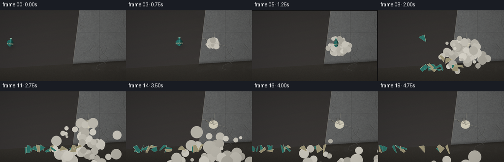
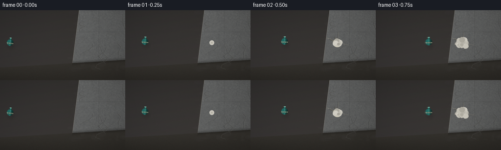
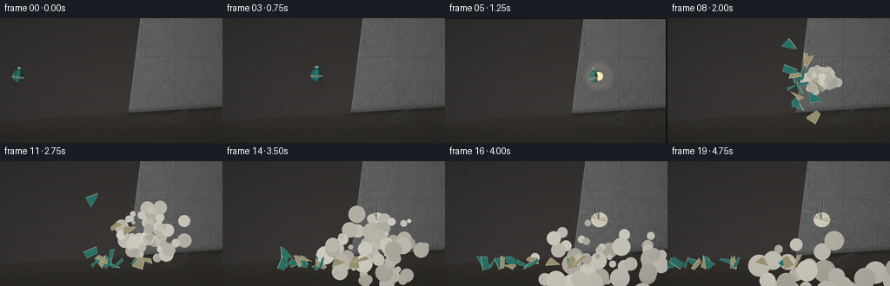
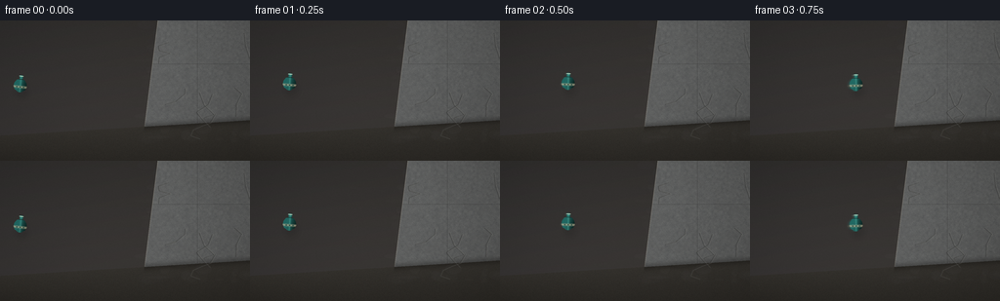
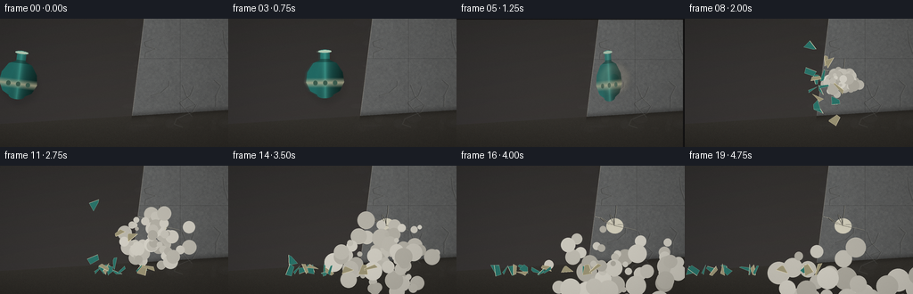
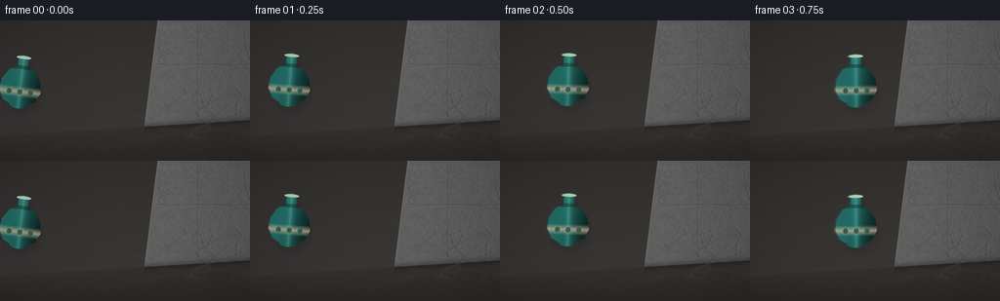

CODING AGENTS AS PIXEL WORLD MODELS
traex/DeepSeek-V4.1-Flash · phygen_132
点击播放 · 原生 RGB 像素
逐轮保存的候选
回放视频、检查图与代码变化。
每份候选均可单独播放。实际图片检查记录在下方工具轨迹中。
候选 01播放与检查图
点击播放 · 原生 RGB 像素


展开代码变化
--- 上一保存版本
+++ 本次保存版本
@@ -0,0 +1,483 @@
+from __future__ import annotations
+
+import math
+from pathlib import Path
+
+import numpy as np
+from PIL import Image, ImageDraw, ImageFilter
+
+from artifact_io import save
+
+
+WIDTH = 256
+HEIGHT = 144
+FRAMES = 20
+FPS = 4.0
+SCALE = 4
+W = WIDTH * SCALE
+H = HEIGHT * SCALE
+
+
+def clamp(value: float, low: float = 0.0, high: float = 1.0) -> float:
+ return max(low, min(high, value))
+
+
+def lerp(a: float, b: float, t: float) -> float:
+ return a + (b - a) * t
+
+
+def make_texture(rng: np.random.Generator) -> Image.Image:
+ """Build a softly lit concrete wall and floor at render resolution."""
+ yy, xx = np.mgrid[0:H, 0:W].astype(np.float32)
+ nx = xx / W
+ ny = yy / H
+
+ # Wall plane: seen at a shallow angle, meeting the floor in the lower third.
+ wall_edge = 0.56 + 0.07 * (1.0 - ny)
+ wall_mask = nx >= wall_edge
+
+ base = np.zeros((H, W, 3), dtype=np.float32)
+
+ # Background room, kept muted so the ceramic object owns the color accent.
+ room = np.stack(
+ [
+ 31.0 + 8.0 * ny + 3.0 * nx,
+ 33.0 + 7.0 * ny + 2.0 * nx,
+ 37.0 + 7.0 * ny,
+ ],
+ axis=-1,
+ )
+ base[:] = room
+
+ # Broad concrete value variation and fine aggregate.
+ coarse = rng.normal(0.0, 1.0, (H // 8 + 1, W // 8 + 1)).astype(np.float32)
+ coarse = np.asarray(
+ Image.fromarray(((coarse - coarse.min()) / (np.ptp(coarse) + 1e-6) * 255).astype(np.uint8))
+ .resize((W, H), Image.Resampling.BICUBIC)
+ ).astype(np.float32)
+ coarse = (coarse / 255.0 - 0.5) * 17.0
+ grain = rng.normal(0.0, 5.5, (H, W)).astype(np.float32)
+ pores = (rng.random((H, W)) > 0.994) * rng.uniform(8.0, 22.0, (H, W))
+
+ # Perspective shading: light from upper left, falloff to the right.
+ light = 1.02 - 0.20 * nx + 0.07 * (1.0 - ny)
+ concrete = np.stack(
+ [
+ 101.0 * light + coarse + grain + pores,
+ 104.0 * light + coarse + grain + pores,
+ 105.0 * light + coarse * 0.9 + grain + pores,
+ ],
+ axis=-1,
+ )
+
+ # Cast seams and small cracks make the surface read as a substantial wall.
+ seam_x = int(W * 0.79)
+ concrete[:, seam_x : seam_x + 2] *= 0.78
+ concrete[:, seam_x + 2 : seam_x + 4] *= 1.05
+ horizontal_seam = int(H * 0.31)
+ concrete[horizontal_seam : horizontal_seam + 2] *= 0.84
+
+ base[wall_mask] = concrete[wall_mask]
+
+ # Wall edge/corner catches a thin warm rim.
+ edge_px = np.clip((nx - wall_edge) * W, 0, None)
+ rim = np.exp(-((edge_px - 1.2) / 1.6) ** 2)
+ base += rim[..., None] * np.array([27.0, 23.0, 17.0], dtype=np.float32)
+
+ # Floor with perspective lines and a faint reflection of the wall.
+ floor_start = 0.82 - 0.11 * nx
+ floor_mask = ny >= floor_start
+ floor_light = 0.82 + 0.18 * (1.0 - (ny - floor_start) / (1.0 - floor_start))
+ floor = np.stack(
+ [
+ 49.0 * floor_light + grain * 0.55,
+ 48.0 * floor_light + grain * 0.50,
+ 45.0 * floor_light + grain * 0.42,
+ ],
+ axis=-1,
+ )
+ base[floor_mask] = floor[floor_mask]
+
+ # Contact shadow at wall base.
+ shadow = np.exp(-((ny - floor_start) / 0.025) ** 2) * wall_mask
+ base *= (1.0 - 0.23 * shadow[..., None])
+
+ image = Image.fromarray(np.clip(base, 0, 255).astype(np.uint8), "RGB")
+ draw = ImageDraw.Draw(image, "RGBA")
+
+ # Subtle mottling on the wall, avoiding any cartoon regularity.
+ for _ in range(95):
+ x = int(rng.uniform(W * 0.58, W))
+ y = int(rng.uniform(0, H * 0.87))
+ rx = int(rng.uniform(2 * SCALE, 14 * SCALE))
+ ry = int(rng.uniform(1 * SCALE, 6 * SCALE))
+ tone = int(rng.uniform(55, 90))
+ alpha = int(rng.uniform(5, 17))
+ draw.ellipse((x - rx, y - ry, x + rx, y + ry), fill=(tone, tone, tone + 1, alpha))
+
+ # A few hairline cracks give the wall age without weakening its mass.
+ for _ in range(7):
+ x = rng.uniform(W * 0.67, W * 0.98)
+ y = rng.uniform(H * 0.08, H * 0.75)
+ points = [(x, y)]
+ for _ in range(int(rng.integers(3, 7))):
+ x += rng.uniform(-12, 14) * SCALE
+ y += rng.uniform(3, 13) * SCALE
+ points.append((x, y))
+ draw.line(points, fill=(47, 49, 49, 85), width=SCALE)
+ draw.line([(p[0] + SCALE, p[1]) for p in points], fill=(139, 139, 133, 35), width=SCALE)
+
+ return image
+
+
+def vase_mask(draw: ImageDraw.ImageDraw, cx: float, cy: float, size: float) -> None:
+ """Draw the silhouette in vase-local coordinates."""
+ s = size
+ body = [
+ (cx - 0.10 * s, cy - 0.42 * s),
+ (cx - 0.28 * s, cy - 0.34 * s),
+ (cx - 0.43 * s, cy - 0.12 * s),
+ (cx - 0.46 * s, cy + 0.12 * s),
+ (cx - 0.36 * s, cy + 0.34 * s),
+ (cx - 0.14 * s, cy + 0.46 * s),
+ (cx + 0.14 * s, cy + 0.46 * s),
+ (cx + 0.36 * s, cy + 0.34 * s),
+ (cx + 0.46 * s, cy + 0.12 * s),
+ (cx + 0.43 * s, cy - 0.12 * s),
+ (cx + 0.28 * s, cy - 0.34 * s),
+ (cx + 0.10 * s, cy - 0.42 * s),
+ ]
+ draw.polygon(body, fill=255)
+ draw.rounded_rectangle(
+ (cx - 0.11 * s, cy - 0.61 * s, cx + 0.11 * s, cy - 0.36 * s),
+ radius=0.055 * s,
+ fill=255,
+ )
+ draw.ellipse(
+ (cx - 0.16 * s, cy - 0.67 * s, cx + 0.16 * s, cy - 0.58 * s),
+ fill=255,
+ )
+ draw.ellipse(
+ (cx - 0.19 * s, cy + 0.36 * s, cx + 0.19 * s, cy + 0.51 * s),
+ fill=255,
+ )
+
+
+def render_vase(size: float = 58.0) -> Image.Image:
+ """Render a celadon-and-cream ceramic vase with a narrow neck."""
+ pad = int(size * 0.25)
+ canvas = int(size * 1.55)
+ cx, cy = canvas / 2, canvas / 2 + 0.02 * size
+
+ mask = Image.new("L", (canvas, canvas), 0)
+ vase_mask(ImageDraw.Draw(mask), cx, cy, size)
+
+ yy, xx = np.mgrid[0:canvas, 0:canvas].astype(np.float32)
+ dx = (xx - cx) / size
+ dy = (yy - cy) / size
+
+ # Soft cylindrical shading with a warm key from the upper left.
+ nx = np.clip(dx / 0.47, -1.0, 1.0)
+ vertical = np.clip(-dy / 0.58, -1.0, 1.0)
+ shade = np.clip(0.80 - 0.48 * nx + 0.11 * vertical, 0.32, 1.0)
+ rim = np.clip(1.0 - abs(nx), 0.0, 1.0) ** 7
+
+ teal = np.array([31.0, 104.0, 100.0], dtype=np.float32)
+ teal_light = np.array([85.0, 164.0, 147.0], dtype=np.float32)
+ rgb = teal[None, None, :] * shade[..., None]
+ rgb += teal_light[None, None, :] * (rim * 0.34)[..., None]
+
+ # Pale glazed belly band and tiny hand-painted foliate marks.
+ band = (dy > 0.02) & (dy < 0.25)
+ band_soft = np.clip(1.0 - np.abs(dy - 0.135) / 0.125, 0, 1)
+ rgb = rgb * (1.0 - 0.78 * band_soft[..., None]) + np.array([190.0, 181.0, 150.0]) * (
+ 0.78 * band_soft[..., None]
+ )
+ for offset in (-0.24, 0.00, 0.24):
+ leaf = ((dx - offset) / 0.055) ** 2 + ((dy - 0.14) / 0.06) ** 2 < 1.0
+ rgb[leaf] = np.array([57.0, 91.0, 79.0])
+
+ # Neck ring and lip highlights.
+ ring = (dy > -0.45) & (dy < -0.37)
+ rgb[ring] *= 0.70
+ lip = ((dx / 0.17) ** 2 + ((dy + 0.63) / 0.035) ** 2) < 1.0
+ rgb[lip] = np.array([178.0, 204.0, 183.0])
+
+ # Fine glaze variation, deterministic and subtle.
+ grain = (np.sin(xx * 1.73 + yy * 0.91) + np.sin(xx * 0.31 - yy * 1.27)) * 2.0
+ rgb += grain[..., None]
+
+ alpha = np.asarray(mask).astype(np.float32)
+ rgba = np.dstack([np.clip(rgb, 0, 255), alpha]).astype(np.uint8)
+ sprite = Image.fromarray(rgba, "RGBA")
+
+ # A restrained drop shadow appears when the vase is near the wall.
+ shadow = Image.new("RGBA", sprite.size, (0, 0, 0, 0))
+ shadow.paste((4, 7, 8, 96), (0, 0), mask)
+ shadow = shadow.filter(ImageFilter.GaussianBlur(3.0 * SCALE))
+ return shadow, sprite
+
+
+def rotated_sprite(sprite: Image.Image, angle: float) -> Image.Image:
+ return sprite.rotate(angle, resample=Image.Resampling.BICUBIC, expand=True)
+
+
+def paste_center(base: Image.Image, sprite: Image.Image, x: float, y: float, opacity: float = 1.0) -> None:
+ if opacity < 1.0:
+ alpha = sprite.getchannel("A").point(lambda a: int(a * opacity))
+ sprite = sprite.copy()
+ sprite.putalpha(alpha)
+ base.alpha_composite(sprite, (int(x - sprite.width / 2), int(y - sprite.height / 2)))
+
+
+def wall_damage(render: Image.Image, t: float) -> None:
+ """Draw the impact scar and its persistent dust haze."""
+ draw = ImageDraw.Draw(render, "RGBA")
+ ix, iy = 177 * SCALE, 67 * SCALE
+ strength = clamp((t - 0.25) / 0.10)
+ if strength <= 0:
+ return
+
+ # Pale crushed-concrete core with branching dark fractures.
+ draw.ellipse(
+ (ix - 9 * SCALE, iy - 8 * SCALE, ix + 10 * SCALE, iy + 9 * SCALE),
+ fill=(204, 201, 184, int(78 * strength)),
+ )
+ rng = np.random.default_rng(1932)
+ for _ in range(8):
+ angle = rng.uniform(-2.9, 0.3)
+ length = rng.uniform(9, 25) * SCALE * strength
+ points = [(ix, iy)]
+ x, y = ix, iy
+ for _ in range(3):
+ angle += rng.uniform(-0.35, 0.35)
+ x += math.cos(angle) * length / 3
+ y += math.sin(angle) * length / 3
+ points.append((x, y))
+ draw.line(points, fill=(44, 45, 43, int(145 * strength)), width=max(1, SCALE // 2))
+ draw.line([(p[0] + SCALE // 2, p[1]) for p in points], fill=(190, 186, 169, int(45 * strength)), width=1)
+
+
+def draw_dust(render: Image.Image, t: float, rng: np.random.Generator) -> None:
+ if t < 0.25:
+ return
+ age = t - 0.25
+ draw = ImageDraw.Draw(render, "RGBA")
+ ix, iy = 177 * SCALE, 67 * SCALE
+ for i in range(68):
+ phase = rng.uniform(0, 2 * math.pi)
+ speed = rng.uniform(4, 30)
+ delay = rng.uniform(0, 0.20)
+ local_age = max(0.0, age - delay)
+ distance = speed * local_age
+ x = ix + math.cos(phase) * distance * SCALE
+ y = iy + math.sin(phase) * distance * 0.72 * SCALE + 8 * local_age * local_age * SCALE
+ radius = rng.uniform(1.1, 4.8) * SCALE * (1.0 + 0.55 * local_age)
+ alpha = int(42 * clamp(1.0 - local_age / 1.8) * clamp(age / 0.08))
+ tone = int(rng.uniform(166, 210))
+ draw.ellipse((x - radius, y - radius, x + radius, y + radius), fill=(tone, tone - 2, tone - 11, alpha))
+
+
+def make_shards(rng: np.random.Generator):
+ """Precompute irregular ceramic fragments in vase-local coordinates."""
+ shards = []
+ # Rings of angular fragments approximate the shell opening outward.
+ specs = [
+ (-0.20, -0.43, 0.13, 0.18),
+ (0.00, -0.45, 0.13, 0.20),
+ (0.20, -0.39, 0.14, 0.18),
+ (-0.34, -0.23, 0.15, 0.17),
+ (-0.12, -0.23, 0.14, 0.20),
+ (0.12, -0.24, 0.15, 0.19),
+ (0.35, -0.18, 0.14, 0.17),
+ (-0.39, 0.02, 0.15, 0.19),
+ (-0.17, 0.01, 0.16, 0.18),
+ (0.08, 0.03, 0.15, 0.19),
+ (0.33, 0.03, 0.15, 0.20),
+ (-0.28, 0.25, 0.16, 0.17),
+ (-0.03, 0.25, 0.18, 0.16),
+ (0.24, 0.25, 0.16, 0.18),
+ (-0.10, 0.40, 0.14, 0.12),
+ (0.17, 0.39, 0.13, 0.12),
+ ]
+ for idx, (lx, ly, w, h) in enumerate(specs):
+ angles = np.sort(rng.uniform(0, 2 * math.pi, 5))
+ points = []
+ for a in angles:
+ rx = w * rng.uniform(0.58, 1.0)
+ ry = h * rng.uniform(0.58, 1.0)
+ points.append((lx + math.cos(a) * rx, ly + math.sin(a) * ry))
+ shards.append(
+ {
+ "points": points,
+ "center": (lx, ly),
+ "angle0": rng.uniform(-0.25, 0.25),
+ "spin": rng.uniform(-7.0, 7.0),
+ "vx": -rng.uniform(16.0, 58.0) + (lx + 0.1) * 30.0,
+ "vy": rng.uniform(-72.0, 35.0) + ly * 35.0,
+ "delay": rng.uniform(0.0, 0.10),
+ "band": ly > 0.01 and ly < 0.26,
+ "large": w * h > 0.025,
+ }
+ )
+ return shards
+
+
+def draw_shards(render: Image.Image, t: float, shards) -> None:
+ age = t - 0.25
+ if age < 0:
+ return
+ draw = ImageDraw.Draw(render, "RGBA")
+ ix, iy = 176 * SCALE, 67 * SCALE
+ floor_y = 119 * SCALE
+
+ for idx, shard in enumerate(shards):
+ local_age = max(0.0, age - shard["delay"])
+ if local_age <= 0:
+ continue
+
+ # Strong initial drag and gravity; larger pieces lose speed faster.
+ drag = 1.0 if shard["large"] else 0.86
+ vx = shard["vx"] * drag
+ vy = shard["vy"] * drag
+ x = ix + vx * local_age * SCALE
+ y = iy + (vy * local_age + 47.0 * local_age * local_age) * SCALE
+
+ # Ground collision produces a small skid/bounce for low fragments.
+ if y > floor_y - 2 * SCALE:
+ y = floor_y - 2 * SCALE
+ vx *= 0.55
+
+ angle = shard["angle0"] + shard["spin"] * local_age
+ c, s = math.cos(angle), math.sin(angle)
+ pts = []
+ for px, py in shard["points"]:
+ rx = (px - shard["center"][0]) * 58 * SCALE
+ ry = (py - shard["center"][1]) * 58 * SCALE
+ pts.append((x + rx * c - ry * s, y + rx * s + ry * c))
+
+ # Ceramic exterior is celadon; broken edges reveal warm cream body.
+ if shard["band"]:
+ fill = (151, 145, 116, 255)
+ edge = (215, 206, 174, 255)
+ else:
+ fill = (39, 113, 105, 255)
+ edge = (143, 182, 162, 255)
+ draw.polygon(pts, fill=fill, outline=edge)
+ if shard["large"] and len(pts) >= 3:
+ draw.line((pts[0], pts[-1]), fill=(232, 221, 189, 180), width=max(1, SCALE // 2))
+
+ # Motion streak only in the first instant of the burst.
+ if local_age < 0.16:
+ sx = x - vx * 0.022 * SCALE
+ sy = y - vy * 0.022 * SCALE
+ draw.line((sx, sy, x, y), fill=(116, 178, 159, 75), width=2 * SCALE)
+
+
+def draw_flash(render: Image.Image, t: float) -> None:
+ if not (0.23 <= t <= 0.34):
+ return
+ strength = 1.0 - abs(t - 0.25) / 0.09
+ glow = Image.new("RGBA", render.size, (0, 0, 0, 0))
+ d = ImageDraw.Draw(glow)
+ ix, iy = 177 * SCALE, 67 * SCALE
+ radius = int((11 + 7 * strength) * SCALE)
+ for r in range(radius, 0, -2 * SCALE):
+ a = int(4 + 35 * strength * (r / radius))
+ d.ellipse((ix - r, iy - r, ix + r, iy + r), fill=(255, 234, 187, a))
+ glow = glow.filter(ImageFilter.GaussianBlur(3 * SCALE))
+ render.alpha_composite(glow)
+
+
+def approach_state(frame: int):
+ # Deliberately fast: only five pre-impact frames show the intact vase.
+ impact_frame = 5.0
+ if frame >= impact_frame:
+ return None
+ u = frame / (impact_frame - 1)
+ # Ease-in acceleration, with a nearly horizontal release trajectory.
+ x = lerp(21.0, 157.0, u * u * 0.56 + u * 0.44)
+ y = 66.0 - 3.0 * math.sin(u * math.pi) + 1.7 * u * u
+ angle = -7.0 + 10.0 * u
+ return x, y, angle
+
+
+def render_frame(frame: int, wall: Image.Image, vase: Image.Image, shadow: Image.Image, shards, seed: int) -> np.ndarray:
+ t = frame / FPS
+ render = wall.copy().convert("RGBA")
+ rng = np.random.default_rng(seed + frame * 101)
+
+ # Tiny camera shake at impact, settling immediately.
+ shake_x = shake_y = 0
+ if frame == 5:
+ shake_x, shake_y = -2 * SCALE, 1 * SCALE
+ elif frame == 6:
+ shake_x, shake_y = 1 * SCALE, -1 * SCALE
+ if shake_x or shake_y:
+ shifted = Image.new("RGBA", render.size, (17, 18, 20, 255))
+ shifted.alpha_composite(render, (shake_x, shake_y))
+ render = shifted
+
+ wall_damage(render, t)
+ draw_dust(render, t, rng)
+
+ state = approach_state(frame)
+ if state is not None:
+ x, y, angle = state
+ # Motion-blur ghosts grow denser as the vase accelerates.
+ if frame >= 1:
+ ghost_count = min(6, frame + 1)
+ for ghost in range(ghost_count, 0, -1):
+ back_u = ghost / 10.0
+ gx = x - back_u * (2.8 + frame * 1.4)
+ gy = y + back_u * 0.8
+ spr = rotated_sprite(vase, angle - 1.2 * back_u)
+ paste_center(render, spr, gx * SCALE, gy * SCALE, opacity=0.055 + 0.025 * (ghost_count - ghost))
+
+ # Contact shadow trails just beneath the vase.
+ sh = rotated_sprite(shadow, angle)
+ paste_center(render, sh, (x + 2) * SCALE, (y + 7) * SCALE, opacity=0.30)
+ spr = rotated_sprite(vase, angle)
+ paste_center(render, spr, x * SCALE, y * SCALE)
+
+ if frame == 5:
+ # The intact silhouette deforms for one frame at the collision point.
+ ix, iy = 171 * SCALE, 67 * SCALE
+ spr = rotated_sprite(vase, 4.0)
+ squeezed = spr.resize((int(spr.width * 0.68), int(spr.height * 1.05)), Image.Resampling.BICUBIC)
+ paste_center(render, squeezed, ix, iy, opacity=0.84)
+ draw_flash(render, t)
+
+ if frame >= 6:
+ draw_flash(render, t)
+ draw_shards(render, t, shards)
+
+ # Warm key light vignette and a fine filmic grain.
+ arr = np.asarray(render.convert("RGB")).astype(np.float32)
+ yy, xx = np.mgrid[0:H, 0:W].astype(np.float32)
+ vx = (xx / W - 0.48) * 1.2
+ vy = (yy / H - 0.52) * 1.0
+ vignette = np.clip(1.0 - 0.22 * (vx * vx + vy * vy), 0.72, 1.0)
+ arr *= vignette[..., None]
+ arr += np.array([3.0, 1.5, 0.0], dtype=np.float32)
+ noise = rng.normal(0.0, 1.65, (H, W, 1)).astype(np.float32)
+ arr += noise
+
+ out = Image.fromarray(np.clip(arr, 0, 255).astype(np.uint8), "RGB")
+ out = out.resize((WIDTH, HEIGHT), Image.Resampling.LANCZOS)
+ return np.asarray(out, dtype=np.uint8)
+
+
+def main() -> None:
+ case_dir = Path(__file__).resolve().parent
+ rng = np.random.default_rng(132)
+ wall = make_texture(rng)
+ shadow, vase = render_vase()
+ shards = make_shards(rng)
+
+ frames = [render_frame(i, wall, vase, shadow, shards, seed=8700) for i in range(FRAMES)]
+ save(frames, case_dir)
+
+
+if __name__ == "__main__":
+ main()
候选 02播放与检查图
点击播放 · 原生 RGB 像素


展开代码变化
--- 上一保存版本
+++ 本次保存版本
@@ -13,6 +13,7 @@
HEIGHT = 144
FRAMES = 20
FPS = 4.0
+IMPACT_TIME = 1.25
SCALE = 4
W = WIDTH * SCALE
H = HEIGHT * SCALE
@@ -234,7 +235,7 @@
"""Draw the impact scar and its persistent dust haze."""
draw = ImageDraw.Draw(render, "RGBA")
ix, iy = 177 * SCALE, 67 * SCALE
- strength = clamp((t - 0.25) / 0.10)
+ strength = clamp((t - IMPACT_TIME) / 0.10)
if strength <= 0:
return
@@ -259,9 +260,9 @@
def draw_dust(render: Image.Image, t: float, rng: np.random.Generator) -> None:
- if t < 0.25:
+ if t < IMPACT_TIME:
return
- age = t - 0.25
+ age = t - IMPACT_TIME
draw = ImageDraw.Draw(render, "RGBA")
ix, iy = 177 * SCALE, 67 * SCALE
for i in range(68):
@@ -324,7 +325,7 @@
def draw_shards(render: Image.Image, t: float, shards) -> None:
- age = t - 0.25
+ age = t - IMPACT_TIME
if age < 0:
return
draw = ImageDraw.Draw(render, "RGBA")
@@ -375,9 +376,9 @@
def draw_flash(render: Image.Image, t: float) -> None:
- if not (0.23 <= t <= 0.34):
+ if not (IMPACT_TIME - 0.02 <= t <= IMPACT_TIME + 0.10):
return
- strength = 1.0 - abs(t - 0.25) / 0.09
+ strength = 1.0 - abs(t - IMPACT_TIME) / 0.12
glow = Image.new("RGBA", render.size, (0, 0, 0, 0))
d = ImageDraw.Draw(glow)
ix, iy = 177 * SCALE, 67 * SCALE
候选 03播放与检查图
点击播放 · 原生 RGB 像素


展开代码变化
--- 上一保存版本
+++ 本次保存版本
@@ -164,7 +164,7 @@
)
-def render_vase(size: float = 58.0) -> Image.Image:
+def render_vase(size: float = 46.0 * SCALE) -> Image.Image:
"""Render a celadon-and-cream ceramic vase with a narrow neck."""
pad = int(size * 0.25)
canvas = int(size * 1.55)
@@ -353,8 +353,8 @@
c, s = math.cos(angle), math.sin(angle)
pts = []
for px, py in shard["points"]:
- rx = (px - shard["center"][0]) * 58 * SCALE
- ry = (py - shard["center"][1]) * 58 * SCALE
+ rx = (px - shard["center"][0]) * 46 * SCALE
+ ry = (py - shard["center"][1]) * 46 * SCALE
pts.append((x + rx * c - ry * s, y + rx * s + ry * c))
# Ceramic exterior is celadon; broken edges reveal warm cream body.
可观测工具轨迹
实际执行的命令与返回图片。
命令 1exit 0
/bin/bash -c "pwd && rg --files -g 'prompt.txt' -g 'GENERATION_RULES.md' -g 'task_spec.json' -g '"'!node_modules'"' -g '"'!venv'"'"
命令 2exit 0
/bin/bash -c 'ls -la'
命令 3exit 0
/bin/bash -c 'git status --short --branch'
命令 4exit 0
/bin/bash -c 'cat prompt.txt'
命令 5exit 0
/bin/bash -c 'cat GENERATION_RULES.md'
命令 6exit 0
/bin/bash -c 'cat task_spec.json'
命令 7exit 0
/bin/bash -c "sed -n '1,260p' artifact_io.py"
命令 8exit 0
/bin/bash -c "find .tmp -maxdepth 2 -type f -printf '%p %s bytes\\n' | head -100"
命令 9exit 1
/bin/bash -c 'python generate.py'
命令 10exit 0
/bin/bash -c 'python generate.py'
命令 11exit 0
/bin/bash -c "python - <<'PY'
from PIL import Image
for p in ['inspection.png','transition_check.png','frames/00.png','frames/05.png','frames/06.png','frames/10.png','frames/19.png']:
im=Image.open(p)
print(p, im.size, im.mode)
PY"命令 12exit 0
/bin/bash -c 'command -v chafa || true'
命令 13exit 0
/bin/bash -c 'command -v viu || true'
命令 14exit 0
/bin/bash -c 'command -v jp2 || command -v img2txt || command -v viu || true'
命令 15exit 0
/bin/bash -c 'python generate.py'
命令 16exit 0
/bin/bash -c "python - <<'PY'
from PIL import Image, ImageOps, ImageDraw
import numpy as np
chars=' .:-=+*#%@'
indices=[0,3,5,6,9,19]
for idx in indices:
im=Image.open(f'frames/{idx:02d}.png').convert('L').resize((64,28))
a=np.asarray(im)
print(f'FRAME {idx:02d}')
for row in a:
print(''.join(chars[min(9, int(v)*10//256)] for v in row))
print()
PY"命令 17exit 0
/bin/bash -c "python - <<'PY'
from PIL import Image
import numpy as np
for i in range(20):
a=np.asarray(Image.open(f'frames/{i:02d}.png')).astype(int)
# teal ceramic: green/blue exceed red and moderate saturation
m=(a[:,:,1]>a[:,:,0]+12)&(a[:,:,2]>a[:,:,0]+5)&(a[:,:,1]>50)
ys,xs=np.where(m)
if len(xs): print(f'{i:02d}: ceramic={len(xs):4d} bbox=({xs.min():3d},{ys.min():3d})-({xs.max():3d},{ys.max():3d})')
else: print(f'{i:02d}: ceramic=0')
PY"命令 18exit 0
/bin/bash -c 'python generate.py'
命令 19exit 0
/bin/bash -c "python - <<'PY'
from PIL import Image
import numpy as np
for i in range(20):
a=np.asarray(Image.open(f'frames/{i:02d}.png')).astype(int)
m=(a[:,:,1]>a[:,:,0]+12)&(a[:,:,2]>a[:,:,0]+5)&(a[:,:,1]>50)
ys,xs=np.where(m)
if len(xs): print(f'{i:02d}: ceramic={len(xs):4d} bbox=({xs.min():3d},{ys.min():3d})-({xs.max():3d},{ys.max():3d})')
else: print(f'{i:02d}: ceramic=0')
PY"命令 20exit 0
/bin/bash -c "python - <<'PY'
from PIL import Image
import numpy as np
prev=None
for i in range(20):
a=np.asarray(Image.open(f'frames/{i:02d}.png')).astype(np.float32)
if prev is not None:
d=np.abs(a-prev)
print(f'{i-1:02d}->{i:02d}: mean={d.mean():6.3f} changed={np.mean(np.any(d>8,axis=2)):.3f}')
prev=a
PY"保存候选 3 份；完成命令 20 次；可验证图片返回 0 张。原始 API 响应与完整日志保留在本地。